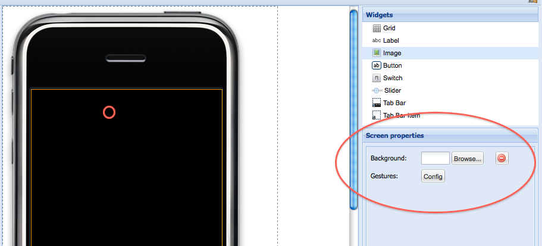

|
This page last changed on Sep 22, 2010 by pjmm.
Testing Boss2
I have tested the following using an i Phone and these are the results so far
X10 I have successfully tested X10 using a CM11 interface using a Button in the Design linked to
an ON and Off Command. Using a switch I can only get it to send an ON command The image I select for the switch On and Off does not display on the iPhone.
TCP/IP I have tested sending commands to a Global Cache unit for IR and this worked successfully
Telnet I have tested sending commands to a client on a PC and it works OK
HTTP I have tried to get this to work with no success. I was able to get it to work using the old design program.
Slide I have tried this cannot get it to work but I am not sure that I fully understand how to configure it
Importing Images as backgrounds I cannot get this to work it looks good in Boss 2 but on the iPhone the image does not display.
|
Thanks for sharing your results Pierce,
The HTTP I will test to see if why it wouldn't work and if it needs more effort to port to 2.0.
The image background issue sounds stranger, I use this regularly with a test screen and it has been working for me.
I'll email you something you can try and see if can replicate.

Posted by juha at Sep 22, 2010 19:26
|
|
One update regarding image import when you select an image in Boss 2 and drag it to your pannell
you get the openremote logo with an orange dox around it. If you stretch this box to full screan and
import an image it will display.
Posted by pjmm at Sep 22, 2010 20:48
|
|
Ok, that is different – that's an image UI component that you can configure to display static image (on top of background) or images bound to specific sensor state.
The background image for the entire panel design is configured when you click on an empty area of the screen, and then configure a background image in screen properties:

This is a bit inconsistent in terms of UI design – will be looking at improving it.
Posted by juha at Sep 22, 2010 20:58
|
|
Hi Yes now I understand Many thanks
Posted by pjmm at Sep 22, 2010 21:42
|
One update regarding image import when you select an image in Boss 2 and drag it to your pannell
you get the openremote logo with an orange dox around it. If you stretch this box to full screan and
import an image it will display.
Just saw this today, and you're right – this is not how it should work though so will be fixing it. If the image overflow is clipped that should be reflected in the designer. However, I think it is better to let the image overflow in which case the iPhone client should not clip the image (which is what it is doing now).
Posted by juha at Sep 23, 2010 13:07
|
|
{kind=link}